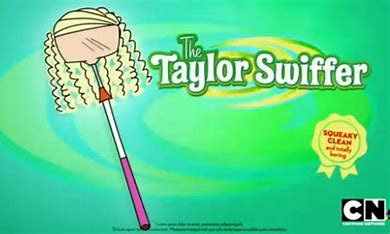

ESCLUSIVA LIDL
SOLO PER VOI OGGI TAYLOR SWIFTER
Ciao a tutti, sono Taylor Swift, e anche se sono abituata a scuotere gli stadi, oggi voglio parlarvi di qualcosa che scuoterà… la polvere! Con Swiffer, pulire è come comporre una canzone: ogni passata è perfetta, ogni angolo viene raggiunto, e ogni stanza splende come un palco al mio tour. Perché, diciamocelo, chi ha tempo di fare le pulizie quando puoi usare un Swiffer e dedicare più tempo a quello che ami? Sii senza paura con Swifter!!!!!!!!
